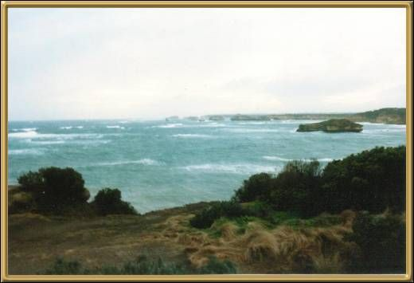

Discovery Bay is part of a National Park now, and is being allowed to revegetate. It is a very wild and beautiful area of Victoria's coastline, near Portland and close to the border of South Australia. There are apparently over 700 different species of native plants and ferns in this area.
Photographer: Mark Stokes